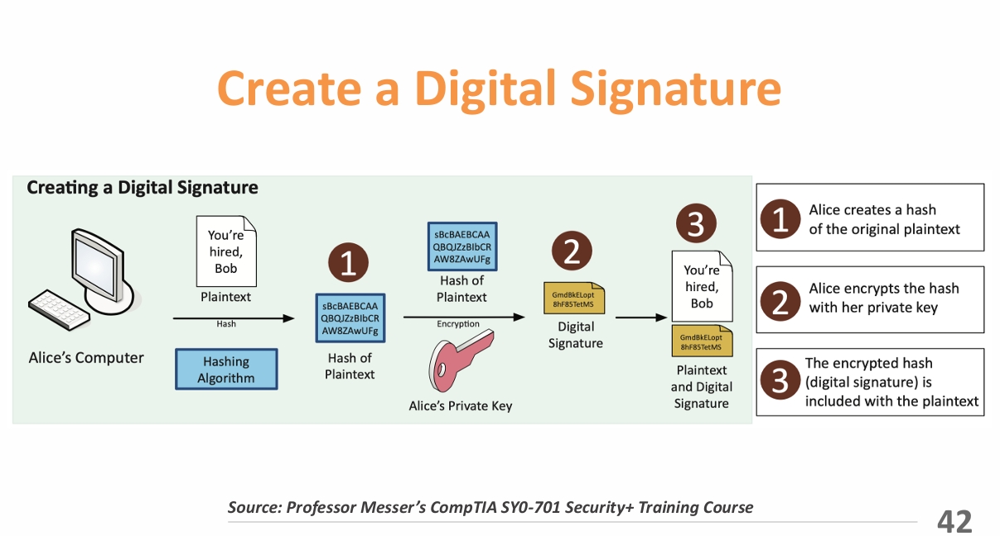
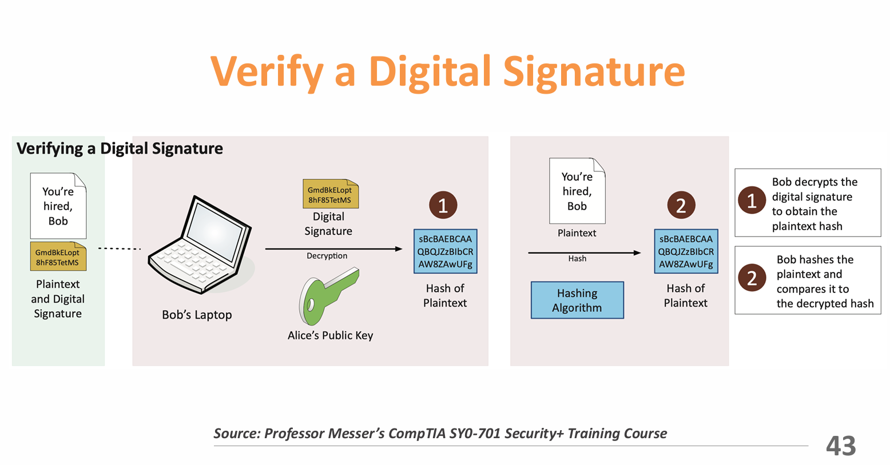

Intro To Cyber
Date Taken: September 16, 2025 (Fall 2025)
Status: Work in Progress
Summary
Cybersecurity is the practice of protecting computers, networks, and digital information from unauthorized access, attacks, or damage.
It involves preventing, detecting, and responding to threats like viruses, malware, phishing, ransomware, and hacking attempts.
The key concepts in cybersecurity are summarized by the CIA Triad: Confidentiality, Integrity, and Availability, which provide a framework for designing and implementing security measures.
Confidentiality
Confidentiality ensures that sensitive information is only accessible to authorized individuals or systems. It prevents unauthorized disclosure of data, protecting privacy and proprietary information.
- Encryption: Transforming information into unreadable formats for unauthorized users. Only those with the correct decryption key can access the data.
- Access Controls: Mechanisms like passwords, biometrics, and role-based permissions restrict access to sensitive data.
- Two-Factor Authentication (2FA): Adds an extra layer of security by requiring two forms of verification before granting access, such as a password and a mobile verification code.
Integrity
Integrity ensures that data remains accurate, consistent, and trustworthy. Unauthorized modification or corruption of data is prevented, and users can rely on its authenticity.
- Hashing: Converts data into a fixed-size string of characters (hash value) to detect any unauthorized changes to the original data.
- Digital Signatures: Cryptographic technique that verifies the authenticity and integrity of a message or document.
- Certificates: Digital credentials that verify the identity of users, systems, or devices, ensuring secure communication.
- Non-repudiation: Provides proof that a transaction or communication took place, preventing entities from denying their actions.


Availability
Availability ensures that authorized users can access information and systems when needed. Systems must remain operational, resilient, and recoverable from failures or attacks.
- Redundancy: Duplicate systems or components that ensure continued operation in case of hardware or software failures.
- Fault Tolerance: Systems designed to operate correctly even when one or more components fail.
- Patching: Regular updates to software and systems to fix security vulnerabilities and maintain stable operation.
General Security Concepts (Lecture 1 & 2)
Security Controls
Security controls are safeguards or countermeasures designed to protect information systems, networks, and assets.
They aim to reduce risks by preventing, detecting, or mitigating threats and vulnerabilities.
Controls are grouped into three main categories:
- Administrative Controls: Policies, procedures, and guidelines that define organizational security standards, such as employee training, access policies, and incident response plans.
- Technical Controls: Tools and technologies like firewalls, encryption, antivirus software, and intrusion detection systems that enforce security at the hardware or software level.
- Physical Controls: Measures that protect physical assets, such as security guards, locks, badges, fences, surveillance cameras, and environmental protections (fire or flood systems).
Control Categories
Security controls are organized to provide comprehensive protection and include the following categories:
- Preventive Controls: Measures designed to stop security incidents before they occur. Examples include firewalls, access restrictions, and employee security awareness programs.
- Detective Controls: Measures to identify and detect incidents as they happen, such as intrusion detection systems, audit logs, and surveillance cameras.
- Corrective Controls: Steps taken to correct or restore systems after an incident, like restoring backups, patching vulnerabilities, or reconfiguring affected systems.
- Deterrent Controls: Mechanisms that discourage malicious actions by making attacks costly or risky, e.g., warning banners, visible cameras, and legal notices.
- Compensating Controls: Alternative measures used when primary controls are unavailable or insufficient, like using multi-factor authentication when biometrics are unavailable.
Types of Security Controls
- Preventive: Administrative, technical, and physical measures to proactively stop attacks or unauthorized activity.
- Deterrent: Controls that create psychological or visible obstacles to discourage malicious actions.
- Detective: Continuous monitoring and auditing to detect anomalies or breaches promptly.
- Corrective: Actions and tools to recover systems and data after a security incident.
- Compensating: Alternative methods to maintain security when primary controls cannot be applied.
- Directive: Policies, guidelines, and signage that guide user behavior and ensure compliance with security practices.
Managing Security Controls
- Risk Assessment: Identify and evaluate threats and vulnerabilities to determine appropriate controls.
- Control Selection: Choose the most effective safeguards based on risk, regulatory requirements, and organizational objectives.
- Implementation: Properly deploy and configure security measures to integrate with the organization's environment.
- Monitoring: Continuously observe controls for effectiveness and detect potential issues through audits and real-time monitoring.
- Improvement: Update and enhance controls to address emerging threats and evolving risks.
Physical Security
Physical security protects buildings, facilities, equipment, and personnel from unauthorized access, theft, and environmental hazards.
It ensures the safety of assets and personnel, preventing damage or disruption to operations.
Key Components:
- Access Control: Locks, security personnel, keycards, and biometric systems to limit entry to authorized personnel.
- Surveillance: Cameras, motion sensors, and alarms to monitor activity and detect potential threats.
- Environmental Controls: Systems protecting against fire, floods, extreme temperatures, and other environmental risks.
- Security Policies: Procedures for visitor management, asset protection, and emergency response.
- Training and Awareness: Educating staff on physical security measures and their responsibilities in maintaining a safe environment.
Examples:
- Fences and Gates: Physical barriers to prevent unauthorized access to facilities.
- Security Guards: Personnel who monitor premises and respond to incidents.
- Surveillance Cameras: Monitor activity and provide evidence in case of breaches.
- Alarm Systems: Notify security teams immediately when unauthorized access is detected.
Access Control (Lecture 3 & 4)
Definitions
- NIST IR 7298: The process of granting or denying requests to obtain and use information and services based on access rules and authorization.
- RFC 4949: Regulates system resource usage according to a security policy, allowing access only to authorized users, processes, or devices.
AAA Framework
-
Authentication: Verifying identity using passwords, certificates, or tokens.
- Automated devices may authenticate using digital certificates for large-scale management.
- Certificates ensure secure access to services like VPNs and management software.
-
Authorization: Determining which resources an authenticated user or device can access.
- Role-based or attribute-based authorization simplifies access management in large environments.
-
Accounting (Auditing): Logging resource usage, such as login time, activity, and logout, for monitoring and compliance.
- Ensures that only authorized systems access sensitive information and tracks all activity for auditing purposes.
Access Control Policies
- Discretionary Access Control (DAC): Access granted based on identity and rules defined by owners.
- Mandatory Access Control (MAC): Access based on security labels compared to user clearances.
- Role-Based Access Control (RBAC): Permissions assigned according to organizational roles.
- Attribute-Based Access Control (ABAC): Access determined by user, resource, and environment attributes.
Subjects, Objects, and Access Rights
- Subject: Entity (user or device) capable of accessing objects.
- Object: Resource being accessed or controlled.
- Access Rights: Permissions granted to subjects (Read, Write, Execute, Delete, Create, Search).
Unix File Access
UNIX files are managed using inodes (Index Nodes), which store metadata and control information for files.
- Inodes contain file attributes, permissions, and location information on disk.
- Multiple file names can link to the same inode, allowing shared access.
- Active inodes are loaded into memory for fast access by the operating system.
- The inode table on disk tracks all file inodes for the file system.
Zero Trust
Zero Trust means never automatically trust anything inside or outside your network.
Even if someone is already inside, they must prove who they are and have permission to access resources.
This approach checks every person, device, and process using things like multi-factor authentication, encryption, access controls, firewalls, and monitoring to keep the network secure.
Planes of Operation
- Divide The Network Into Planes - Works for physical devices, virtual systems, and cloud setups.
- Data Plane - Moves and handles the actual data—sends, encrypts, and routes packets.
- Control Plane - Tells the data plane what to do—sets rules, policies, and routing decisions.
Security Zones
- Security isn't just one-to-one - Grouping systems into zones helps manage security better.
- Zones Show Trust Levels - hink about where traffic is coming from and going to—trusted vs. untrusted, internal vs. external networks, or different departments like Marketing, IT, Accounting, HR.
- Zones Control Access - Sometimes just being in the wrong zone is enough to block access. Some zones are automatically trusted.
Policy Enforcement Point (PEP)
They acts like a gatekeeper for the network. Decides what to do with connections: allows them, monitors them, or blocks them. Can be made of serval parts working together.
Applying Trust In The Planes
- Policy Decision Point (PDP) - Decides whether someone or something should be allowed access.
- Policy Engine - Checks the rules and other information, then decides to allow, deny, or revoke access.
- Policy Administrator - Talks to the gatekeeper (PEP), gives access tokens or credentials, and tells the PEP whether to allow access. Can also make authentication stronger if needed.